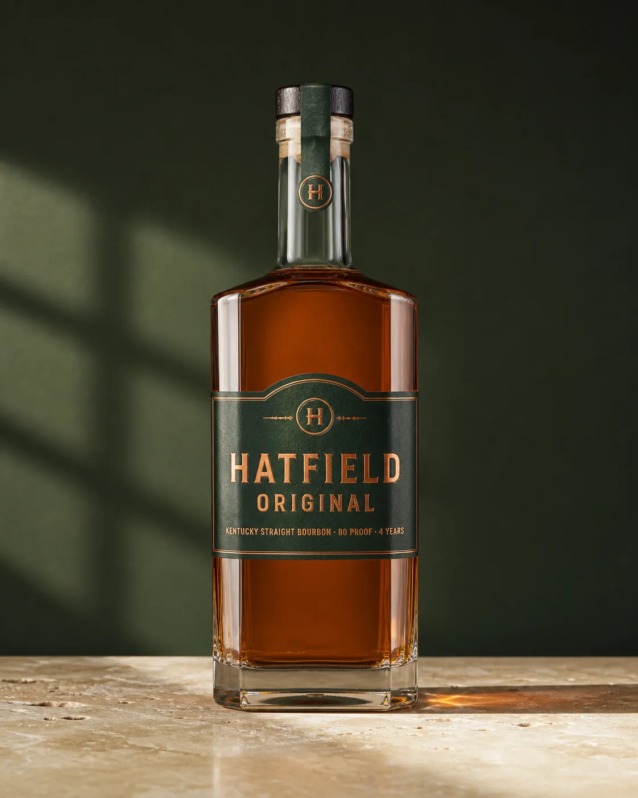
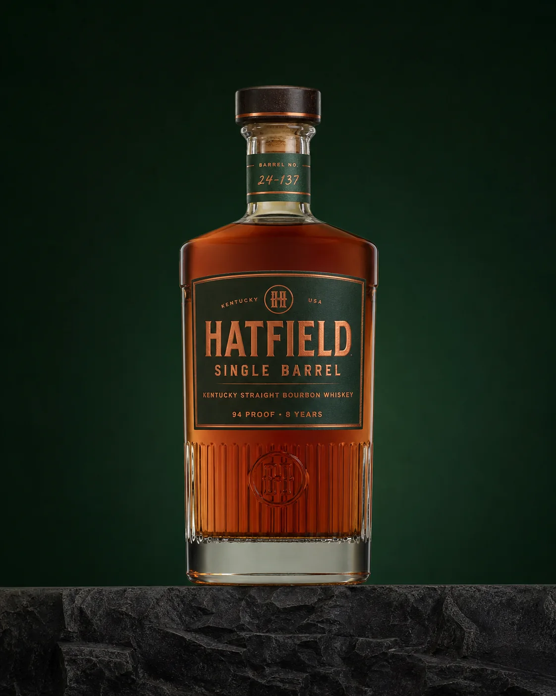

Hatfield Original
Four-year Kentucky straight bourbon · 80 proof (40% ABV). The core expression, familiar at the bar and in the kitchen’s preserving repertoire.
Bardstown, Kentucky · Since 1952
Kentucky heritage behind globally familiar spirits and wines, with a growing international network of restaurants, hotels and listening clubs.
James Hatfield founded the distillery in Bardstown, Kentucky, in 1952. Today, master distiller Carolyn Hatfield-Moore oversees the whiskey’s production, quality and maturation.
Hatfield Group belongs to Walker Holdings, with heritage protections preserving the Hatfield name and production standards. Everyday spirits and regional wines reach ordinary shops alongside premium and allocated releases. The hospitality network has 306 operating venues: 240 Bar & Grills, 52 Inns, 12 Stave clubs and two Still Houses, with further signed projects kept separate from the open count.
At Albury, Hatfield’s full commercial spirits and wine families are within the house selection alongside bottles from other producers. Original, Small Batch, Rye, Wheated Bourbon, Bottled in Bond, Single Barrel, longer-aged and allocated bourbon expressions, Hatfield gin, and estate, premium and regional wines can be drawn on; Crispin or Harjit confirms actual cellar stock. The private Alex family barrel is not a bar listing. Hatfield Original also goes into the kitchen’s bourbon–black cherry confiture.

Four-year Kentucky straight bourbon · 80 proof (40% ABV). The core expression, familiar at the bar and in the kitchen’s preserving repertoire.

Eight-year bourbon · 94 proof (47% ABV). Bottled for individual barrel character; a premium step up within the established range.
These two pictured bourbons are only examples. Albury’s wider Hatfield range includes Small Batch, Rye, Wheated Bourbon, Bottled in Bond, longer-aged and allocated expressions, Scottish gin, Napa and Chianti Classico estates, premium wines and everyday regional labels. Other producers are served alongside them. Limestone Springs supplies the house water, sodas and mixers.